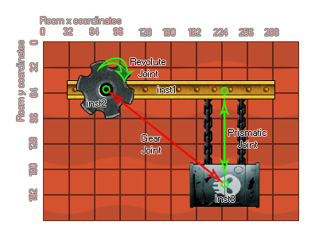

physics_joint_gear_create(inst1, inst2, joint_1, joint_2, ratio)
| Argumento | Descripción |
|---|---|
| inst1 | La primera instancia para conectarse con la articulación |
| inst2 | La segunda instancia para conectarse con la articulación |
| joint_1 | Una articulación revolucionaria previamente definida |
| joint_2 | Una articulación revoluta o prismática previamente definida |
| ratio | Establezca la relación de velocidad entre las dos articulaciones |
Devoluciones: índice de la articulación
Si desea crear un artilugio mecánico sofisticado, es posible que desee utilizar engranajes. En principio, puede crear engranajes en GameMaker Studio 2 mediante el uso de instancias de composición para modelar dientes de engranaje, ¡pero esto no es muy eficiente y podría ser tedioso de autorizar! Afortunadamente hay un método más simple, y es usar una articulación de engranaje. Para hacer uno, debe haber definido previamente sus accesorios y haber creado las dos juntas básicas que van a formar su equipo: estos deben estar formados por una junta giratoria y una junta prismática u otra articulación giratoria. La imagen a continuación muestra cómo un arte normalmente se crearía en un juego:  ¿Así que lo que ocurre? Bueno, una vez que las dos articulaciones se agregan al engranaje, la interacción con uno tendrá un efecto sobre el otro, así que en la imagen de ejemplo de arriba, si giras inst2, inst3 se moverá hacia arriba y hacia abajo, o si mueves inst3 arriba y abajo entonces inst2 rotará. También puede cambiar la relación de transmisión, lo que significa que necesita mover una instancia más (o menos) para obtener el efecto deseado. El código en el ejemplo de la parte inferior muestra cómo se puede crear algo como la imagen de arriba.
Nota: si necesita eliminar cualquiera de las dos instancias que están involucradas en la articulación del engranaje (o simplemente eliminar sus articulaciones), primero debe eliminar la articulación del engranaje utilizando physics_joint_delete() ¡De lo contrario, obtendrás un error!
var t_fix, g_fix, inst1, inst2, inst3, r_joint,
p_joint;
g_fix = physics_fixture_create();
physics_fixture_set_box_shape(g_fix, 40, 10);
t_fix = physics_fixture_create();
physics_fixture_set_circle_shape(t_fix, 10);
physics_fixture_set_density(t_fix, 0.5);
inst1 = instance_create_layer(60, room_height - 30, "Background",
obj_Ground);
inst2 = instance_create_layer(40, room_height - 300, "Instances",
obj_Cog);
inst3 = instance_create_layer(150, room_height - 300, "Instances",
obj_Barrel);
physics_fixture_bind(g_fix, inst1);
physics_fixture_bind(t_fix, inst2);
physics_fixture_bind(t_fix, inst3);
r_joint = physics_create_revolute_joint(inst1, inst2, 40,
room_height - 300, -80, 80, 1, 10, 0.5, 1, 0);
p_joint = physics_create_prismatic_joint(inst1, inst3, 150,
room_height - 300, 0, 1, -10, 10, true, 0, 0, 0, 0);
physics_create_gear_joint(inst2, inst3, r_joint, p_joint,
0.5);
El código anterior crea y define dos dispositivos y luego crea tres instancias, una "obj_Ground" y otras dos, "obj_Cog" y "obj_Barrel". Los accesorios están ligados a estas instancias y se crean dos uniones. Una articulación revolucionaria entre el suelo y el engranaje, y una junta prismática entre el suelo y el cañón. Finalmente, se crea una unión de engranaje entre las instancias de engranaje y tambor utilizando las juntas revolucionarias y prismáticas previamente definidas.